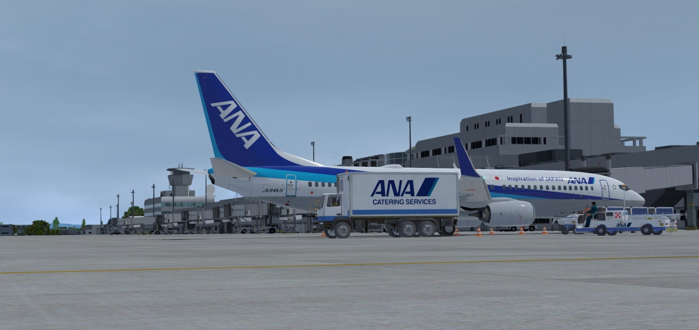
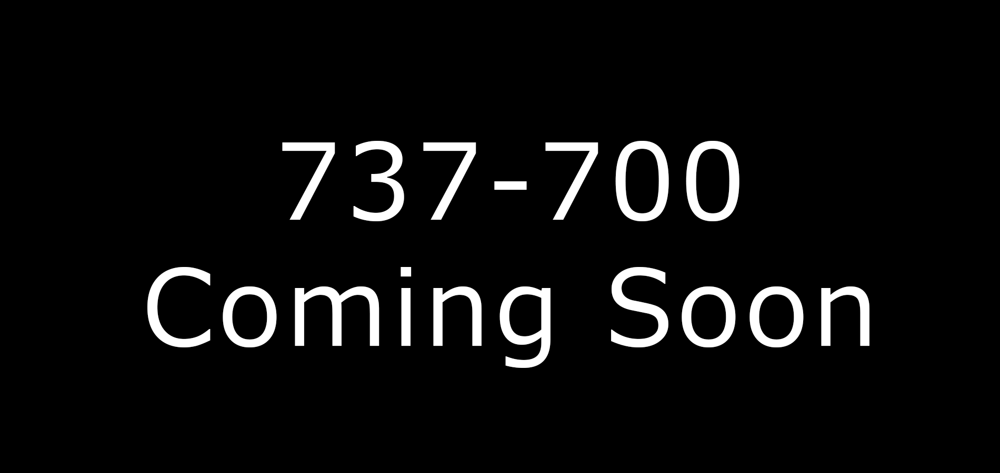
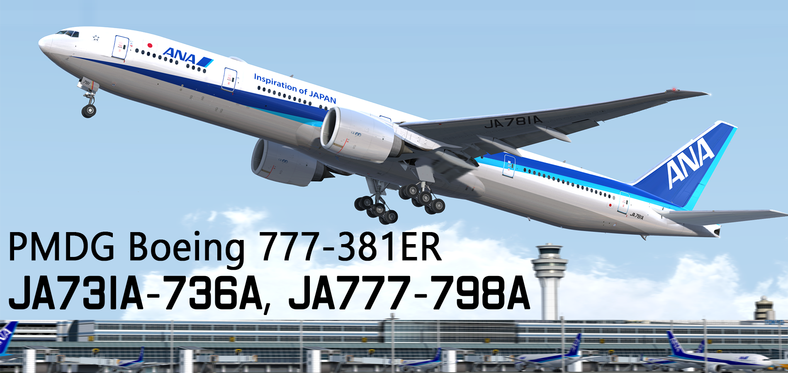

FlightSim Web
トップ
リペイント/推奨シーナリー
機材LIST
飛行計画経路
ANA Virtual
English
リペイント
< Back

PMDG NGXu 737-881(8AL) (JA51AN-JA66AN, JA68AN-90AN)

PMDG NGXu 737-781

PMDG NGXu 777-381(ER) (開発中) (By CaptainGabe)